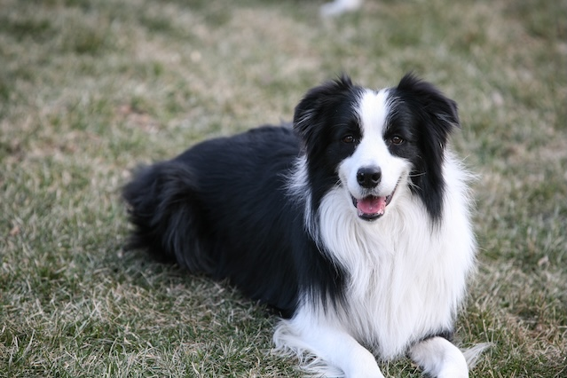

Facts on Border Collies
Border Collies are famous for their exceptional intelligence, they often learn commands quickly and thrive on mental challenges. Due to this, they can become bored easily if they are not stimulated -- which may lead to behaviors like chewing or excessive barking. However, they are also extemely loyal and responsive animals to their owners and are often sensitive to tone and body language.

Is a Border Collie Right for you?
Border Collies do best in enviroments where they have a lot of space. Ideal homes include; active individuals or families, rural or suburban areas with yards, owners interested in dog sports(agility, obedience, herding trials). Border Collies are amazing companions if you enjoy being active, have time for training and interaction, and want a highly responsive, smart dog!